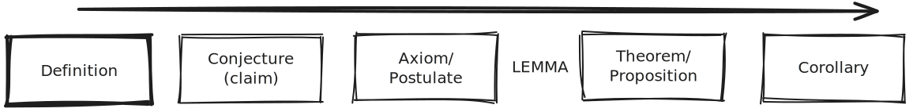
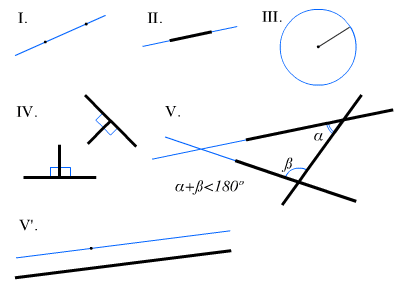

Logic#
1. Mathematical Logic (Discrete)#
Boolean Algebra#
This is the language of logic. There are only two numbers 0 and 1.
1 = True
0 = False
Propositional logic#
A proposition is a statement that has one truth value (True or False).
Example of a preposition
“The earth is round.”
“\(5+6 = 11\)”
“Tokyo is the capital of China”
“There is life beyond our solar system”
“\(x^2 -25 =0\)” (if we know x, the expression can be evaluate as true or false)
Propositional variable holds an event that can either be True \(\oplus\) False.
Truth tables demonstrates the value of a compound preposition.
Connectives are like operations using two prepositional variables.
Symbol |
Connective |
Meaning |
|---|---|---|
\(\land\) |
Conjunction |
And |
\(\lor\) |
Disjunction |
Or |
\(\oplus\) |
Exclusive Disjunction |
Xor |
\(\neg\) |
Negation |
Not |
\(\to\) |
Conditional |
If…then… OR …implies… |
\(\leftrightarrow\) |
Biconditional |
…if and only if… OR iff |
\(\Leftrightarrow\) |
is equivalent to |
equal |
Note: or is conventionlly inclusive, if it is exclusive, then we need context saying it is exclusive.
Before moving on, please try to understand intuitively the truth tables of these basic connective.
Order of Operation#
Propositional Expression can become hard to evaluate when we mied variables and connectives together.
Order of operation is used to avoid confusion.
parentheses ()[]
not \(\neg\)
and (left to right) \(\land\)
or (left to right) \(\lor\)
if…then \(\to\)
iff \(\leftrightarrow\)
“ \(\overbrace{p\land\underbrace{\neg q}_{2}\lor \underbrace{\neg \overbrace{(p\land q)}^{1}}_{2}}^{3,4 ->}\) “
De Morgan’s Laws#
\(p\) = “It will rain today”
\(q\) = “It will rain tommorow”
\(p\land q\) = “It will rain today and tommorow. “
This statement will be false when i.e. Not (It will rain today and tommorow) = It Not (rain today) or Not (rain tommorow).
\(\neg(p\land q) = \neg p \lor \neg q\)
\(p\lor q\) = It will rain today or tommorow.
This statement will be false when i.e. Not (It will rain today or tommorow) = It Not (rain today) and Not (rain tommorow).
\(\neg(p\lor q) = \neg p \land \neg q\)
Conditional Logic as propositional expression#
From our nice intuition proof in Conditional Truth Table, We have arrive at \(\neg (p \to q) = p \land \neg q\). Then we will need a lemma, which state that negating a negation is equal to not doing anything.\(\neg (\neg p) = p\).
To prove this, you can create the truth table and compare!
Predicate logic#
Proof techniques#
Model theory#
Proof theory#
Computability theory#
Gödel’s incompleteness theorems#
2. Set Theory (Discrete)#
Sets and subsets#
Operations on sets#
Relations and functions#
Cardinality#
Ordinal numbers#
Axiom of choice#
Zermelo-Fraenkel set theory#
3. Math Foundation#
Introduction to Proof#

These are not set in stone. One usually starts with a definition. Then they make an unproven claim or conjecture. Axioms are meant to be minimal assumptions before building up. Lemmas are milestones as we work towards proving a theorem. Proof of a theorem is the primary goal. Corollaries are short proofs that rely heavily on the theorem.
A definition is an accurate description of a concept, which require no proof, and should be reversible.
“if a is define as b (a=b), then, if b, it must be a.”
“A sphere is the collection of all points some set distance from a fixed centre.”
An axiom is a statement that we accept without prove. Everything we prove must then be built off our axioms. The fewer the axioms the better(i.e. less assumption).
\(0\cdot a = 0\)
We use axioms to prove theorem. We can use our result to prove more Theorems. By doing this we accumulate the tools we have.
The Pythagorean Theorem
A lemma is a mini-theorem (small result) we might need to prove our main result.
Results that comes easily from a theorem are called corollaries
A trivial solution is an obvious solution
Find all [integer](diophantine equation) a, b, c such that \(a^n + b^n = c^n\) Then a, b, c = 0 is a trivial solution.
Euclidean Geometry / Plane Geometry#
Euclid only use 5 axioms to derive everything in geometry.
A line segment may be drawn between any two points.
A straight line may be extended infitely.
A circle may be drawn with any center and any radius.
All right angles have equal measure.
Given a line that interseects two other lines, if the angle made by those two lines with the first line add up to less than \(180\text{\textdegree}\) on thee same side, then those two lines must eventually meet on that side of the first line. This is also known as The Parallel Postulate.

The 5th axioms creates problems for many mathematician. Many have tried to use the first four axioms to prove the 5th but nobody could. It turns out that this postulate is only true for a geometry on a plane.
A similiar axiom to the parallel Postulate is the Playfair’s Axiom. “Given a line and a point not on that line, exactly one line can be drawn through that point that will be parallel to the first line.”
Non-Euclidean Geometry#
We start by assuming that Euclid’s 5th postulate is false, then work on it. This lead to finding Hyperbolic Geometry or Eliptical Geometry
Are there a complete set of axioms that can prove every theorem?#
There was a time where Mathematic is facing a foudnation crisis. Godel’s incompleteness theorem showed that Hilbert’s program was futile. No mathematical system can be both complete and consistnt.